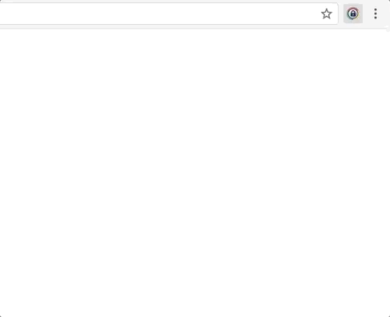

KeePass Tusk - a better password manager
KeePass Tusk - a better password manager
This extension adds KeePass autofill functionality to Google Chrome without compromising security for convenience.
Tusk is a fork of CKP, and seeks to provide improvements to the UI, better security practices, and KDBX version 4 support using the KdbxWeb library. Tusk is formerly known as CKPX - we are currently in the middle of a rebrand and re-release.
Install CKPX From Google Web Store Download Source Code Report a ProblemFeatures
| CKP | Tusk | |
|---|---|---|
| KDBX v4 Support | ||
| Fetch Databse over HTTP | ||
| Use Cloud Shared URLs | ||
| Modern UI | ||
| Under Active Development | ||
| Autofill or Copy KeePass Passwords | ||
| Google Drive, OneDrive, or Dropbox Support |
Request features in the github issue tracker.
Example
Unlock screen, where the suggested password will appear, as well as any messages about the current page.
Contribute
Tusk is open source. We use GitHub for source control, and contributions are welcome.
- Clone or Pull Request
- Contact: brandon [at] subdavis [dot] com
Privacy Policy
- Tusk may transmit and receive user data between the user's own storage at one of the cloud storage providers (e.g. Google Drive, Dropbox) and CKP extension. When doing so, data is always encrypted using the mechanism supported by the cloud provider.
- Tusk does not transmit data to anywhere not mentioned above.
- Tusk only scans webpages when the user has opted-in to fill passwords on that particular website.
- When Tusk scans a webpage, it is for the sole purpose of identifying username and password fields, so that they may be automatically filled at the user's request.